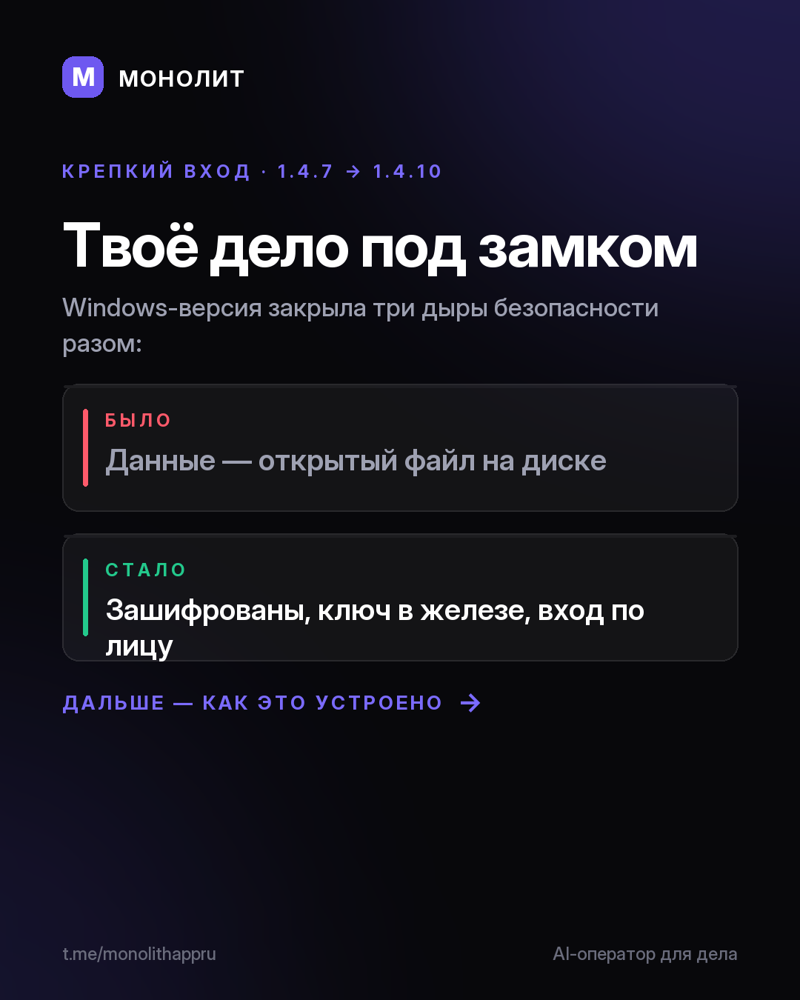

Дневник разработки · 22.07.2026
Твоё дело под замком (1.4.10 beta)

Твоя база лежала на диске обычным файлом
Заказы, клиенты, суммы, телефоны — на компьютере всё это хранилось открытым файлом, который могла прочитать любая программа под твоей учёткой. За последние версии мы это закрыли.
🔒 База под шифром
Файл базы теперь шифртекст. Ключ лежит в аппаратном хранилище Windows, а не в приложении. Старые базы переезжают на шифрование сами, без потери данных.
👤 Вход по биометрии
Windows Hello, отпечаток или лицо — быстрый вход поверх пароля. А сам пароль больше не хранится открытым текстом.
⏱ Автоблокировка
Свернул окно или отошёл на 10 минут — приложение само встаёт на замок. Порог настраивается.
И честный экран запуска: видно, что реально включено, без «вас взломали» на пустом месте. Заодно починили «Подрядчиков» и наполнили «Новости».
Windows-бета 1.4.10 — можно пощупать руками: сайт · доступ и вопросы @sbphotoshoter
МОНОЛИТ — учёт заказов, клиентов и денег одной фразой. Windows и Android, бесплатная бета.
Скачать Читать канал